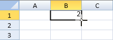
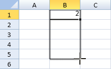
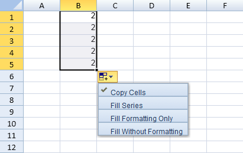
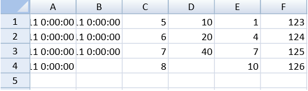
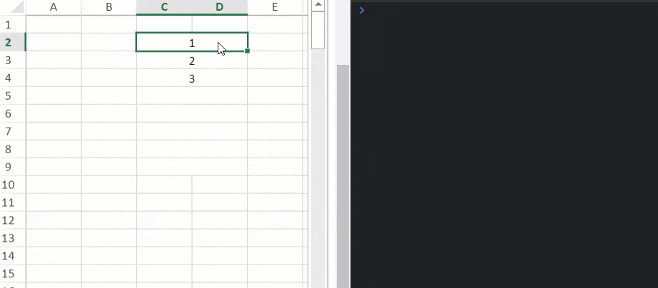

SpreadJS has a drag fill option that allows the user to select cells and fill other cells with the same or different values. The fill type can be set to linear, growth, date, or automatic fill. The fill direction can also be specified. Additional options can be set such as step and stop values.
Select a cell or block and move the mouse pointer over the square at the corner of the selection. The mouse pointer changes to a plus shape that can be used to expand the fill range.

Expand the range and release the mouse.

Click on the plus mark to display a menu with additional fill options as shown in the following image:

Drag fill is not supported if the destination range contains a spanned cell. Drag fill does not apply to a conditional format or filtered range.
The options.allowUserDragFill property is used to specify whether to allow drag fill. The fillAuto method can be used to programmatically specify the type of fill.

This example fills a cell range.
| JavaScript |
Copy Code
|
|---|---|
spread.options.allowUserDragFill = true; activeSheet.setValue(0, 0, new Date(2011, 1, 1)); activeSheet.setValue(0, 1, new Date(2011, 2, 9)); activeSheet.setValue(0, 2, 5); activeSheet.setValue(0, 3, 10); activeSheet.setValue(0, 4, 1); var start = new GC.Spread.Sheets.Range(0, 0, 1, 1); var r = new GC.Spread.Sheets.Range(0, 0, 4, 1); activeSheet.fillAuto(start, r, { fillType: GC.Spread.Sheets.Fill.FillType.date, series: GC.Spread.Sheets.Fill.FillSeries.column, fillDirection: GC.Spread.Sheets.Fill.FillDirection.down, unit: GC.Spread.Sheets.Fill.FillDateUnit.day, step: 1, stop: new Date(2011, 2, 11) }); start = new GC.Spread.Sheets.Range(0, 1, 1, 1); var r2 = new GC.Spread.Sheets.Range(0, 1, 4, 1); activeSheet.fillAuto(start, r2, { fillType: GC.Spread.Sheets.Fill.FillType.date, series: GC.Spread.Sheets.Fill.FillSeries.column, fillDirection:GC.Spread.Sheets.Fill.FillDirection.down, unit: GC.Spread.Sheets.Fill.FillDateUnit.day, step: 1, stop: new Date(2011, 2, 11) }); start = new GC.Spread.Sheets.Range(0, 2, 1, 1); var r3 = new GC.Spread.Sheets.Range(0, 2, 4, 1); activeSheet.fillAuto(start, r3, { fillType: GC.Spread.Sheets.Fill.FillType.auto, series: GC.Spread.Sheets.Fill.FillSeries.column, }); start = new GC.Spread.Sheets.Range(0, 3, 1, 1); var r4 = new GC.Spread.Sheets.Range(0, 3, 4, 1); activeSheet.fillAuto(start, r4, { fillType: GC.Spread.Sheets.Fill.FillType.growth, series: GC.Spread.Sheets.Fill.FillSeries.column, step:2, stop:55 }); start = new GC.Spread.Sheets.Range(0, 4, 1, 1); var r5 = new GC.Spread.Sheets.Range(0, 4, 4, 1); activeSheet.fillAuto(start, r5, { fillType: GC.Spread.Sheets.Fill.FillType.linear, series: GC.Spread.Sheets.Fill.FillSeries.column, step:3, stop:20 }); activeSheet.setValue(0, 5, 123); var r6 = new GC.Spread.Sheets.Range(0, 5, 4, 1); activeSheet.fillAuto(new GC.Spread.Sheets.Range(0, 5, 1, 1), r6, { fillType: GC.Spread.Sheets.Fill.FillType.auto, series: GC.Spread.Sheets.Fill.FillSeries.column, }); |
|
You can receive information such as data range and number of rows/columns when any kind of invalid operation involving drag fill occurs using the invalidOperation event.
The InvalidOperation event argument provides a parameter called fillRange which returns the range used for the fill operation when invalidType is dragFill.

The following code sample shows how to retrieve information about invalid ranges when using the dragfill operation.
| JavaScript |
Copy Code
|
|---|---|
// Configure Workbook and Worksheet var spread = new GC.Spread.Sheets.Workbook("ss"); var activeSheet = spread.getActiveSheet(); // Set allowCopyPasteExcelStyle to true spread.options.allowCopyPasteExcelStyle = true; spread.bind(GC.Spread.Sheets.Events.InvalidOperation, (e, args) => { // This code registers the invalid range when drag fill operation is performed if (args.invalidType == GC.Spread.Sheets.InvalidOperationType.dragFill) console.log(args.fillRange); }); |
|